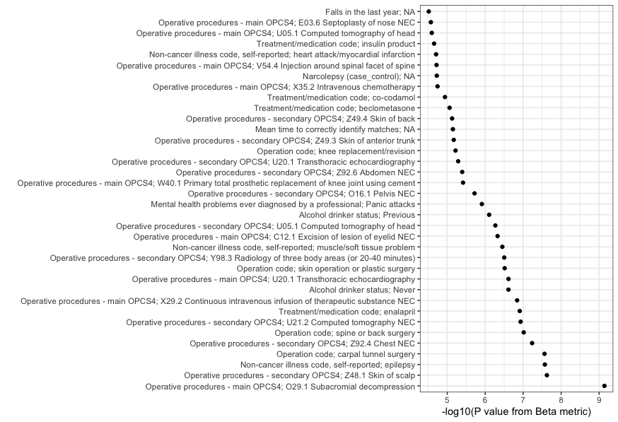

Overview
The goal of ukbFGSEA is to apply gene set enrichment analysis, based on FGSEA package, to Genebass data released by Karczewski et al. The package is amed to help researchers to perform detailed evaluations of gene set enrichment across a wide range of phenotypes. The package mainly includes three functions:
ukbfgsea()appliesfgsea::fgseaMultilevel()- an adaptive multilevel splitting Monte Carlo approach, to a single phenotype in the UK Biobank Genebass dataset for a specified input gene set.map_ukbfgsea()appliesfgsea::fgseaMultilevel()to multiple phenotypes in the UK Biobank Genebass dataset for a specified input gene set. This function is suitable for large-scale(or full) Genebass dataset.tidy_map()organizes the raw output ofmap_ukbfgsea()to a tibble including distinct columns for each phenotype and each ranking method, providing a clear and accessible summary of the FGSEA results.
Installation
You can install the development version of ukbFGSEA like so:
# install.packages("devtools")
library(devtools)
install_github("ctlab/fgsea")
install_github("AzuleneG/ukbFGSEA")genebass_test_data is a test data originated from results.mt provided on the Genebass website. The package implements it as a test data set for testing the functions. We includes the documentation of this dataset, but because this test data is very large (220.6MB), the file is only provided in the releases of repo AzuleneG/ukbFGSEA. You can install the data like so:
DO NOT install piggyback from CRAN to avoid a possible bug. Use install_github() instead.
Example
This example shows how to use map_ukbfgsea() to apply FGSEA on Genebass data, using the test data attached in the package.
library(tidyverse)
library(ukbFGSEA)
genebass_test_data
genebass_test_data %>%
count(trait_type, phenocode, description, description_more)
# then apply ukbfgsea to three phenotypes for each of gene set
set.seed(123)
asd_output <- map_ukbfgsea(input_geneset = ASD185, multiple_phenotypes = genebass_test_data)
asd_output_tidy <- tidy_map(asd_output)
asd_output_tidyTutorial
Introduction
Welcome to the ukbFGSEA tutorial. This package is designed for performing fast pre-ranked gene set enrichment analysis (FGSEA) specifically tailored for the UK Biobank Genebass dataset. This tutorial aims to guide you through the effective use of the package, employing practical examples using gene sets related to Autism Spectrum Disorder (ASD), Developmental Delay (DD), and Neurodevelopmental Disorders (NDD).
Practical Examples
Example 1: Quick Test Run
Since the Genebass data, including 4,529 phenotypes, is very large, running ukbFGSEA on all of them can take quite many hours. To illustrate how to run ukbFGSEA, we will use three phenotypes from Genebass as an example for a quick test run. Later, we will describe how to read in data, including all phenotypes from Genebass and apply ukbFGSEA to them.
# First, load the libraries, Genebass Test Data, ASD Gene Set, DD Gene Set and NDD Gene Set
library(tidyverse)
library(ukbFGSEA)
library(piggyback) #Only for test data
# Download and load test data
pb_download("genebass_test_data.rda",
repo = "AzuleneG/ukbFGSEA",
dest = tempdir())
load(paste0(tempdir(), "/genebass_test_data.rda"))
# Display the structure of the test data
genebass_test_data %>%
count(annotation,
trait_type,
phenocode,
description,
description_more)## # A tibble: 12 × 6
## annotation trait_type phenocode description description_more n
## <chr> <chr> <dbl> <chr> <chr> <int>
## 1 missense|LC categorical 6150 Vascular/heart… "ACE touchscree… 19052
## 2 missense|LC continuous 22200 Year of birth "Year of birth … 19389
## 3 missense|LC continuous 30760 HDL cholesterol "Measured by en… 19304
## 4 pLoF categorical 6150 Vascular/heart… "ACE touchscree… 18027
## 5 pLoF continuous 22200 Year of birth "Year of birth … 17579
## 6 pLoF continuous 30760 HDL cholesterol "Measured by en… 18220
## 7 pLoF|missense|LC categorical 6150 Vascular/heart… "ACE touchscree… 18281
## 8 pLoF|missense|LC continuous 22200 Year of birth "Year of birth … 18611
## 9 pLoF|missense|LC continuous 30760 HDL cholesterol "Measured by en… 18530
## 10 synonymous categorical 6150 Vascular/heart… "ACE touchscree… 19023
## 11 synonymous continuous 22200 Year of birth "Year of birth … 19342
## 12 synonymous continuous 30760 HDL cholesterol "Measured by en… 19272
# Apply ukbfgsea to three phenotypes for each gene set
set.seed(123)
asd_test_output <- map_ukbfgsea(input_geneset = ASD185, multiple_phenotypes = genebass_test_data)
asd_test_output_tidy <- tidy_map(asd_test_output)
asd_test_output_tidy## # A tibble: 12 × 33
## annotation n_cases n_controls heritability saige_version inv_normalized
## <chr> <dbl> <dbl> <dbl> <chr> <lgl>
## 1 missense|LC 9308 384687 0.0604 SAIGE_0.44.5 FALSE
## 2 pLoF 9308 384687 0.0604 SAIGE_0.44.5 FALSE
## 3 synonymous 9308 384687 0.0604 SAIGE_0.44.5 FALSE
## 4 pLoF|missense|LC 9308 384687 0.0604 SAIGE_0.44.5 FALSE
## 5 missense|LC 99877 NA 0 SAIGE_0.44.5 FALSE
## 6 pLoF 99877 NA 0 SAIGE_0.44.5 FALSE
## 7 synonymous 99877 NA 0 SAIGE_0.44.5 FALSE
## 8 pLoF|missense|LC 99877 NA 0 SAIGE_0.44.5 FALSE
## 9 missense|LC 344938 NA 0 SAIGE_0.44.5 FALSE
## 10 pLoF 344938 NA 0 SAIGE_0.44.5 FALSE
## 11 synonymous 344938 NA 0 SAIGE_0.44.5 FALSE
## 12 pLoF|missense|LC 344938 NA 0 SAIGE_0.44.5 FALSE
## # ℹ 27 more variables: trait_type <chr>, phenocode <dbl>, pheno_sex <chr>,
## # coding <dbl>, modifier <chr>, n_cases_defined <dbl>,
## # n_cases_both_sexes <dbl>, n_cases_females <dbl>, n_cases_males <dbl>,
## # description <chr>, description_more <chr>, coding_description <chr>,
## # category <chr>, beta_pval <dbl>, beta_padj <dbl>, beta_log2err <dbl>,
## # beta_ES <dbl>, beta_NES <dbl>, beta_size <int>, beta_leadingEdge <list>,
## # sign_pval <dbl>, sign_padj <dbl>, sign_log2err <dbl>, sign_ES <dbl>, …
set.seed(123)
dd_test_output <- map_ukbfgsea(input_geneset = DD477, multiple_phenotypes = genebass_test_data)
dd_test_output_tidy <- tidy_map(dd_test_output)
dd_test_output_tidy## # A tibble: 12 × 33
## annotation n_cases n_controls heritability saige_version inv_normalized
## <chr> <dbl> <dbl> <dbl> <chr> <lgl>
## 1 missense|LC 9308 384687 0.0604 SAIGE_0.44.5 FALSE
## 2 pLoF 9308 384687 0.0604 SAIGE_0.44.5 FALSE
## 3 synonymous 9308 384687 0.0604 SAIGE_0.44.5 FALSE
## 4 pLoF|missense|LC 9308 384687 0.0604 SAIGE_0.44.5 FALSE
## 5 missense|LC 99877 NA 0 SAIGE_0.44.5 FALSE
## 6 pLoF 99877 NA 0 SAIGE_0.44.5 FALSE
## 7 synonymous 99877 NA 0 SAIGE_0.44.5 FALSE
## 8 pLoF|missense|LC 99877 NA 0 SAIGE_0.44.5 FALSE
## 9 missense|LC 344938 NA 0 SAIGE_0.44.5 FALSE
## 10 pLoF 344938 NA 0 SAIGE_0.44.5 FALSE
## 11 synonymous 344938 NA 0 SAIGE_0.44.5 FALSE
## 12 pLoF|missense|LC 344938 NA 0 SAIGE_0.44.5 FALSE
## # ℹ 27 more variables: trait_type <chr>, phenocode <dbl>, pheno_sex <chr>,
## # coding <dbl>, modifier <chr>, n_cases_defined <dbl>,
## # n_cases_both_sexes <dbl>, n_cases_females <dbl>, n_cases_males <dbl>,
## # description <chr>, description_more <chr>, coding_description <chr>,
## # category <chr>, beta_pval <dbl>, beta_padj <dbl>, beta_log2err <dbl>,
## # beta_ES <dbl>, beta_NES <dbl>, beta_size <int>, beta_leadingEdge <list>,
## # sign_pval <dbl>, sign_padj <dbl>, sign_log2err <dbl>, sign_ES <dbl>, …
set.seed(123)
ndd_test_output <- map_ukbfgsea(input_geneset = NDD664, multiple_phenotypes = genebass_test_data)
ndd_test_output_tidy <- tidy_map(ndd_test_output)
ndd_test_output_tidy## # A tibble: 12 × 33
## annotation n_cases n_controls heritability saige_version inv_normalized
## <chr> <dbl> <dbl> <dbl> <chr> <lgl>
## 1 missense|LC 9308 384687 0.0604 SAIGE_0.44.5 FALSE
## 2 pLoF 9308 384687 0.0604 SAIGE_0.44.5 FALSE
## 3 synonymous 9308 384687 0.0604 SAIGE_0.44.5 FALSE
## 4 pLoF|missense|LC 9308 384687 0.0604 SAIGE_0.44.5 FALSE
## 5 missense|LC 99877 NA 0 SAIGE_0.44.5 FALSE
## 6 pLoF 99877 NA 0 SAIGE_0.44.5 FALSE
## 7 synonymous 99877 NA 0 SAIGE_0.44.5 FALSE
## 8 pLoF|missense|LC 99877 NA 0 SAIGE_0.44.5 FALSE
## 9 missense|LC 344938 NA 0 SAIGE_0.44.5 FALSE
## 10 pLoF 344938 NA 0 SAIGE_0.44.5 FALSE
## 11 synonymous 344938 NA 0 SAIGE_0.44.5 FALSE
## 12 pLoF|missense|LC 344938 NA 0 SAIGE_0.44.5 FALSE
## # ℹ 27 more variables: trait_type <chr>, phenocode <dbl>, pheno_sex <chr>,
## # coding <dbl>, modifier <chr>, n_cases_defined <dbl>,
## # n_cases_both_sexes <dbl>, n_cases_females <dbl>, n_cases_males <dbl>,
## # description <chr>, description_more <chr>, coding_description <chr>,
## # category <chr>, beta_pval <dbl>, beta_padj <dbl>, beta_log2err <dbl>,
## # beta_ES <dbl>, beta_NES <dbl>, beta_size <int>, beta_leadingEdge <list>,
## # sign_pval <dbl>, sign_padj <dbl>, sign_log2err <dbl>, sign_ES <dbl>, …Example 2: Applying ukbFGSEA on Genebass Data Including All Phenotypes
If you’d like to run ukbFGSEA on all phenotypes in the UK Biobank, first download the entire Genebass dataset from Google Drive. Reading in the data may take several hours due to its large size. The runtime of ukbFGSEA depends on the number of phenotypes provided to the map_ukbfgsea function. Therefore, we suggest filtering out phenotypes that are not relevant to your interests and those with small sample sizes in the UK Biobank, as they lack power in burden tests. Generally, we recommend filtering out phenotypes with case sample sizes < 3000 and those with descriptions starting with “Date”. You are welcome to apply your own filtering criteria to clean the phenotypes.
In the following code example, we apply our recommended filters and focus on the burden test results of pLoF (protein-truncating) variants. Since it may take many hours to run ukbFGSEA on thousands of phenotypes, we provide the tidy output of map_ukbfgsea on filtered phenotypes in our package for users as an example. Users can simply load the data asd_all_output_tidy, dd_all_output_tidy, and ndd_all_output_tidy.
library(tidyverse)
library(ukbFGSEA)
all_phenotypes <- readRDS(file = "/the/path/to/genebass_all_phenotypes.rds")
phenotypes_filtered <- all_phenotypes %>%
filter(n_cases >= 3000) %>%
filter(!str_detect(description, "^Date ")) %>%
filter(annotation == "pLoF")
set.seed(123)
asd_all_output <- map_ukbfgsea(input_geneset = ASD185, multiple_phenotypes = phenotypes_filtered)
asd_all_output_tidy <- tidy_map(asd_all_output)
asd_all_output_tidy
set.seed(123)
dd_all_output <- map_ukbfgsea(input_geneset = DD477, multiple_phenotypes = phenotypes_filtered)
dd_all_output_tidy <- tidy_map(dd_all_output)
dd_all_output_tidy
set.seed(123)
ndd_all_output <- map_ukbfgsea(input_geneset = NDD664, multiple_phenotypes = phenotypes_filtered)
ndd_all_output_tidy <- tidy_map(ndd_all_output)
ndd_all_output_tidyResults Interpretation
Identifying Phenotypes Significantly Enriched with Input Gene Set
To identify which phenotypes are significantly enriched with ASD, DD and NDD genes respectively, we apply a p-value cutoff and Enrichment Score (ES) filter. Here, we first load the results on filtered phenotypes with the burden test of pLoF variants as examples and apply the criteria.
# Load the tidy results
data("asd_all_output_tidy")
data("ndd_all_output_tidy")
data("dd_all_output_tidy")
#Function to extract the significant phenotypes
extract_significant_phenotypes <- function(data) {
data <- data %>%
ungroup() %>%
mutate(description_full = paste0(description, "; ", coding_description))
cor_value <- cor(data$beta_pval, data$sign_pval, use = "complete.obs")
print(paste("Correlation between beta_pval and sign_pval:", cor_value))
cutoff <- 0.05 / nrow(data)
data_sig <- data %>%
filter(beta_pval <= cutoff, sign_pval <= cutoff,
beta_NES > 0, sign_NES > 0) %>%
mutate(description_full = fct_reorder(description_full, beta_pval))
return(data_sig)
}
# extract phenotypes significantly enriched with ASD genes
significant_with_asd <- extract_significant_phenotypes(asd_all_output_tidy)
# extract phenotypes significantly enriched with DD genes
significant_with_dd <- extract_significant_phenotypes(dd_all_output_tidy)
# extract phenotypes significantly enriched with NDD genes
significant_with_ndd <- extract_significant_phenotypes(ndd_all_output_tidy)
significant_with_asd## # A tibble: 36 × 34
## annotation n_cases n_controls heritability saige_version inv_normalized
## <chr> <dbl> <dbl> <dbl> <chr> <lgl>
## 1 pLoF 9234 385549 0.0595 SAIGE_0.44.5 FALSE
## 2 pLoF 3255 391528 0.0213 SAIGE_0.44.5 FALSE
## 3 pLoF 3105 391678 0.0300 SAIGE_0.44.5 FALSE
## 4 pLoF 3851 390932 0.140 SAIGE_0.44.5 FALSE
## 5 pLoF 3036 391747 0.0338 SAIGE_0.44.5 FALSE
## 6 pLoF 3590 391193 0.0197 SAIGE_0.44.5 FALSE
## 7 pLoF 9257 385526 0.0303 SAIGE_0.44.5 FALSE
## 8 pLoF 4912 389871 0.0392 SAIGE_0.44.5 FALSE
## 9 pLoF 4801 389982 0.0193 SAIGE_0.44.5 FALSE
## 10 pLoF 3381 391402 0.0176 SAIGE_0.44.5 FALSE
## # ℹ 26 more rows
## # ℹ 28 more variables: trait_type <chr>, phenocode <chr>, pheno_sex <chr>,
## # coding <chr>, modifier <chr>, n_cases_defined <dbl>,
## # n_cases_both_sexes <dbl>, n_cases_females <dbl>, n_cases_males <dbl>,
## # description <chr>, description_more <chr>, coding_description <chr>,
## # category <chr>, beta_pval <dbl>, beta_padj <dbl>, beta_log2err <dbl>,
## # beta_ES <dbl>, beta_NES <dbl>, beta_size <int>, beta_leadingEdge <list>, …
significant_with_dd## # A tibble: 116 × 34
## annotation n_cases n_controls heritability saige_version inv_normalized
## <chr> <dbl> <dbl> <dbl> <chr> <lgl>
## 1 pLoF 9234 385549 0.0595 SAIGE_0.44.5 FALSE
## 2 pLoF 5232 389551 0.0234 SAIGE_0.44.5 FALSE
## 3 pLoF 3045 391738 0.0757 SAIGE_0.44.5 FALSE
## 4 pLoF 15514 379269 0.0646 SAIGE_0.44.5 FALSE
## 5 pLoF 3019 391764 0.134 SAIGE_0.44.5 FALSE
## 6 pLoF 3255 391528 0.0213 SAIGE_0.44.5 FALSE
## 7 pLoF 4063 390720 0.0746 SAIGE_0.44.5 FALSE
## 8 pLoF 5494 389289 0.0199 SAIGE_0.44.5 FALSE
## 9 pLoF 22602 372181 0.0131 SAIGE_0.44.5 FALSE
## 10 pLoF 5473 389310 0.0147 SAIGE_0.44.5 FALSE
## # ℹ 106 more rows
## # ℹ 28 more variables: trait_type <chr>, phenocode <chr>, pheno_sex <chr>,
## # coding <chr>, modifier <chr>, n_cases_defined <dbl>,
## # n_cases_both_sexes <dbl>, n_cases_females <dbl>, n_cases_males <dbl>,
## # description <chr>, description_more <chr>, coding_description <chr>,
## # category <chr>, beta_pval <dbl>, beta_padj <dbl>, beta_log2err <dbl>,
## # beta_ES <dbl>, beta_NES <dbl>, beta_size <int>, beta_leadingEdge <list>, …
significant_with_ndd## # A tibble: 164 × 34
## annotation n_cases n_controls heritability saige_version inv_normalized
## <chr> <dbl> <dbl> <dbl> <chr> <lgl>
## 1 pLoF 9234 385549 0.0595 SAIGE_0.44.5 FALSE
## 2 pLoF 5232 389551 0.0234 SAIGE_0.44.5 FALSE
## 3 pLoF 3265 391518 0.0331 SAIGE_0.44.5 FALSE
## 4 pLoF 7887 386896 0.0206 SAIGE_0.44.5 FALSE
## 5 pLoF 5472 389311 0.0218 SAIGE_0.44.5 FALSE
## 6 pLoF 3122 391661 0.0124 SAIGE_0.44.5 FALSE
## 7 pLoF 3255 391528 0.0213 SAIGE_0.44.5 FALSE
## 8 pLoF 4063 390720 0.0746 SAIGE_0.44.5 FALSE
## 9 pLoF 5494 389289 0.0199 SAIGE_0.44.5 FALSE
## 10 pLoF 22602 372181 0.0131 SAIGE_0.44.5 FALSE
## # ℹ 154 more rows
## # ℹ 28 more variables: trait_type <chr>, phenocode <chr>, pheno_sex <chr>,
## # coding <chr>, modifier <chr>, n_cases_defined <dbl>,
## # n_cases_both_sexes <dbl>, n_cases_females <dbl>, n_cases_males <dbl>,
## # description <chr>, description_more <chr>, coding_description <chr>,
## # category <chr>, beta_pval <dbl>, beta_padj <dbl>, beta_log2err <dbl>,
## # beta_ES <dbl>, beta_NES <dbl>, beta_size <int>, beta_leadingEdge <list>, …
# An example to visualize phenotypes significantly enriched with ASD
significant_with_asd %>%
ggplot(aes(description_full, -log10(beta_pval)))+
geom_point()+
coord_flip()+
theme_bw()+
xlab("")+
ylab("-log10(P value from Beta metric)")
Biological Relevance
We discuss the phenotypes significantly enriched with ASD genes as example here. The results highlight the complex interplay between ASD genes and a wide array of phenotypic traits in the UK Biobank. These findings can be interpreted in several ways:
Comorbidities and Genetic Overlap: The significant enrichment of ASD genes in conditions like epilepsy, panic attacks, and various physical ailments underscores the multifaceted nature of ASD. It suggests that the genetic basis of ASD may also predispose individuals to other neurological and physical health conditions.
Implications for Treatment and Management: Understanding these genetic linkages can inform more comprehensive healthcare strategies for individuals with ASD. For instance, the link between ASD genes and metabolic conditions like diabetes (insulin product usage) can lead to integrated care approaches that address both neurodevelopmental and metabolic health.
Behavioral and Lifestyle Factors: The significant enrichment in alcohol consumption categories provides insights into the behavioral patterns associated with ASD. These patterns may be influenced by the genetic makeup of individuals and can have implications for lifestyle interventions and support mechanisms.
Medical Interventions and Surgical Needs: The variety of surgeries and medical procedures associated with enriched ASD genes indicate that individuals with ASD might have higher healthcare needs, particularly related to musculoskeletal and chronic conditions. This highlights the importance of specialized medical care and preventive strategies in this population.
Potential for Further Research: These findings open avenues for further research into the specific genetic mechanisms underlying these associations. Investigating the pathways and genes involved could lead to better diagnostic tools and targeted therapies for both ASD and its comorbid conditions.
In conclusion, the significant enrichment of ASD genes across diverse phenotypes in the UK Biobank underscores the broad impact of these genetic factors on health and disease. This analysis not only enhances our understanding of ASD but also informs holistic approaches to healthcare and research for individuals with ASD-related genetic profiles. Future studies should aim to unravel the specific genetic and molecular mechanisms driving these associations to develop more effective interventions and support systems.
We hope this tutorial helps you effectively use the ukbFGSEA package for your gene set enrichment analysis.
Getting help
If you find problems, please report them with clear information on GitHub. You can also contact the authors through email: hedyzhu615@gmail.com and pengjun.guo@outlook.com